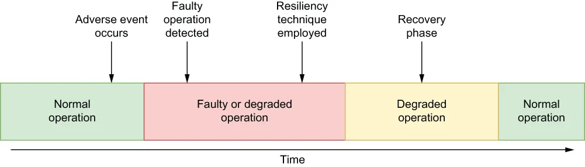

This chapter covers
Making your Pulsar Functions-based applications resilient to adverse events
Implementing well-established resiliency patterns using Pulsar Functions
本章内容包括
让基于 Pulsar Functions 的应用具备对抗不利事件的韧性
使用 Pulsar Functions 实现若干成熟的韧性模式
As the architect of the GottaEat order entry microservice, your primary goal is to develop a system that can accept incoming food orders from customers 24 hours a day, 7 days a week, and within a response time acceptable to the customer. Your system must be available at all times; otherwise, your company will not only lose revenue and customers, but its reputation will suffer as well. Therefore, you must design your system to be both highly available and resilient to provide continuity of service. Everyone wants their systems to be resilient, but what does that actually mean? Resilience is the ability of a system to withstand disruptions caused by adverse events and conditions, while maintaining an acceptable level of performance relative to any number of quantitative metrics, such as availability, capacity, performance, reliability, robustness, and usability.
作为 GottaEat 订单录入微服务的架构师，你的首要目标是打造出这样一个系统：它能够全天候（一周 7 天、一天 24 小时）接收来自客户的 incoming 餐品订单，并且响应时间处在客户可接受的范围内。你的系统必须随时可用；否则，你的公司不仅会损失收入和客户，声誉也会受损。因此，你必须把自己的系统设计成既高可用、又具备韧性，以实现服务的连续性。每个人都希望自己的系统有韧性，但这究竟意味着什么？韧性（resilience）指的是：一个系统能够承受由不利事件和不利条件所引起的扰动，同时在可用性、容量、性能、可靠性、健壮性、易用性等任意数量的量化指标上，维持在一个可接受的绩效水平。
Being resilient is important because no matter how well your Pulsar application is designed, an unanticipated incident, such as the loss of electrical power or network communications, will eventually emerge and disrupt the topology. Implicit in this statement is the idea that adverse events and conditions will occur. It really isn’t a matter of if but when. Resiliency is about what your software does when these disruptive events occur. Does the Pulsar function detect these events and conditions? Does it properly respond to them once they are detected? Does the function properly recover afterward?
具备韧性之所以重要，是因为无论你的 Pulsar 应用设计得多好，某个未曾预料的事件——例如电力中断或网络通信中断——终将出现，并扰乱整个拓扑。这句话里隐含着一个观念：不利事件和不利条件是一定会发生的。这真的不是"会不会"的问题，而是"什么时候"的问题。韧性所关切的，正是当这些破坏性事件发生时，你的软件会做些什么。这个 Pulsar 函数能检测到这些事件和条件吗？一旦检测到，它能做出恰当的响应吗？事后这个函数能妥善恢复吗？
A highly resilient system will utilize several reactive resiliency techniques to actively detect these adversities and respond to them to return the system back to its normal operating state automatically, as shown in figure 9.1. This is particularly useful in a streaming environment, where any disruption of service can result in the data not being captured from the source and being lost forever.
一个高度韧性的系统会运用若干被动响应式（reactive）的韧性技术，来主动侦测这些不利状况并做出响应，从而自动把系统带回到正常运行状态，如图 9.1 所示。这一点在流式环境中尤其有用——因为在那样的环境里，任何一次服务中断都可能导致数据没能从源头被采集到，从而永久丢失。

Figure 9.1 A resilient system will automatically detect adverse events or conditions and take proactive measures to return itself to a normal operating state.
图 9.1 一个有韧性的系统会自动检测不利事件或不利条件，并主动采取措施，使自身回到正常运行状态。
Obviously, the key to employing any reactive technique is the ability to detect the adverse conditions. In this chapter we will cover how to detect faulty conditions with a Pulsar Functions application and some of the resiliency techniques you can use within your Pulsar functions to make them more resilient.
显然，运用任何一种响应式技术的关键，都在于能否检测到那些不利条件。在本章中，我们将讲解如何在一个 Pulsar Functions 应用中检测故障状况，以及你可以在自己的 Pulsar 函数内部使用哪些韧性技术，来让它们变得更有韧性。